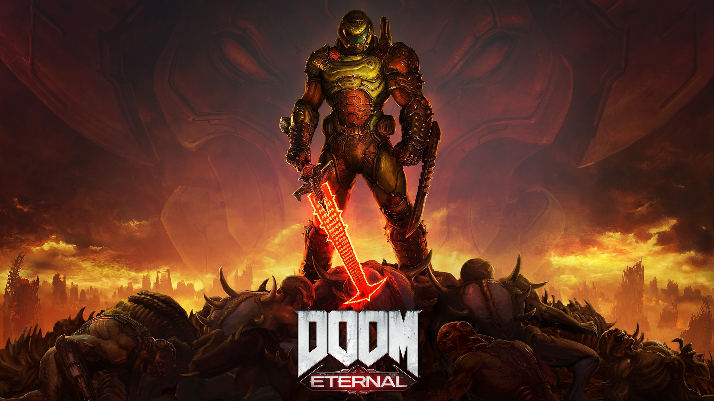
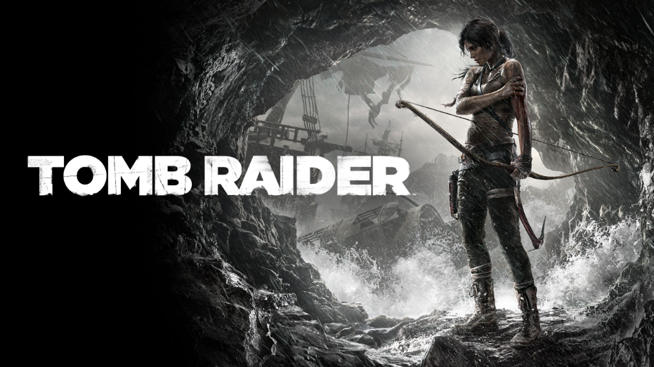

Los videojuegos de disparos son aquellos en los que el jugador asume el rol de una persona, vehículo o nave y el objetivo principal es atacar a objetivos diversos disparando proyectiles.
Es un género de disparos en 3D en donde la acción se desarrolla desde la perspectiva del personaje protagonista, sea humano u otro tipo. El objetivo es recorrer un escenario laberíntico repleto de enemigos, tratando de cumplir un objetivo que por lo general es llegar a una meta o vencer a un jefe. Algunos juegos dentro de este género permiten cambiar la perspectiva a tercera persona viéndole la espalda del protagonista. Ejemplos: Wolfenstein 3D, Doom, Half-Life, Quake.
Es un género de disparos en 3D en donde la cámara muestra al jugador de espaldas mientras recorre el escenario y ataca a los enemigos. Se diferencian de los de 1º persona por tener una mayor movilidad del personaje, combinando por lo general elementos de otros géneros como las plataformas, las aventuras o el sigilo. Ejemplos: Tomb Raider, Max Payne.
